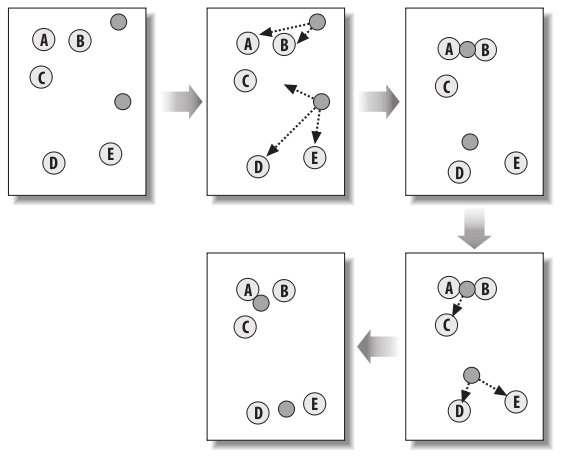
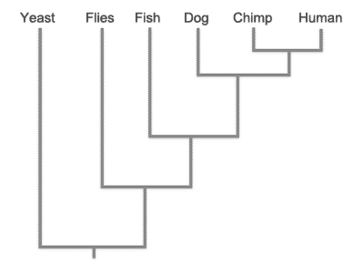
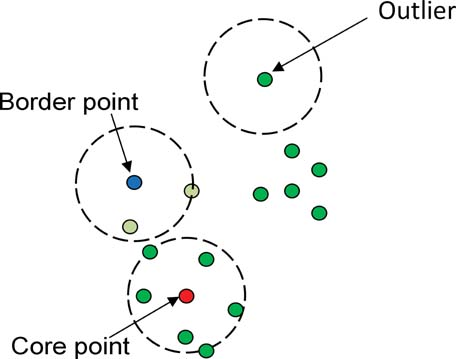

Clustering is the process of designating data points into groups of similarity. The biggest driver behind this is that having groups aids in the classification process of new data elements. Another big driver is the discover of subsets of data that can be used for further examination. As you read through the three predominate algorithms I present below be very cautious of a few things. First all clustering algorithms are sensitive to the distance metric used for them. With attempting to create clusters a good amount of thought should be placed into what distance metric to use because the use of different metrics produces different results that will give different meaning to the information extracted. Also beware of the drawbacks mentioned as each method has strengths and weaknesses that also require adequate forethought if you want to get useful results.
The algorithm for K-means clustering is rather straight forward. The first step is to create K initial data points with the same parameters as the data objects being clustered. Most of the time these are just randomly selected, however if desired they can be preset, or initially placed based on the operators preference. One of these initial placement strategies is to put it at the edged of the data set, another is to just select k preexisting data points and use them as the starting points. After these starting points have been selected the next step is to determine which of these k points each point in the dataset belongs to. This is through the use of a distance metric, which should be selected based on which is most appropriate for the data set being analyzed. Each data set is assigned to the K point that is the closest to it. Once every data point has been assigned the next step is to update the location of the K points. This is most commonly done by taking the average of all the data points associated with that K point and moving it to that average point. This process of assigning points and moving the K points is repeated until a stopping condition is met. This stopping condition is usually either a certain number of iterations or until the K points move less than a certain threshold or some combination of the two. At this point the data is segmented into K clusters. The common issue to K-means clustering is knowing what value to use for K. There really isn't a great way to figure this out through an algorithm, however if you know the number of groups to separate into and have a good similarity metric this algorithm works very well.
Graphical depiction of the K-Means process
double* Kmeans(double data[][150], int k, int datapoints, int count, double groups[]){
int i, j, l;
for(i=0; i<=count;i ++){
groups[i] = 0;
}
if( k < 1 || k > 150){ return groups; }
if( k == 1 ){
for (i = 0; i < count; i ++){
groups[i] = 1;
}
return groups;
}
//initalize the kpoint
// datapoints is 4 for iris dataset
double k_points[datapoints+1][k];
srand((unsigned)time(NULL));
for (i = 0; i < k ; i ++){
for( j = 0 ; j < datapoints; j ++){
l = rand()%count;
k_points[j][i] = data[j][l];
}
}
int rounds;
for(rounds = 0; rounds < 100; rounds ++){
// find which group each point belongs
for(i = 0; i < count; i ++){
double min_length = 10000;
int k_val=0;
for( j = 0; j < k; j ++){
double a[datapoints], b[datapoints];
for(l = 0; l < datapoints;l++){
a[l] = data[l][i];
b[l] = k_points[l][j];
}
double length = Euclidean(a,b,4);
if(length < min_length){
min_length = length;
k_val = j;
}
}
data[datapoints+1][i] = k_val;
}
// clear the datapoints in k_points
for(i = 0; i < k ; i ++){
for(j = 0 ; j <= datapoints; j++){
k_points[j][i] = 0;
}
}
//generate new k_points
//add up all values assiciated with point k
for(i = 0; i < count; i++){
j = data[datapoints+1][i];
for( l = 0; l < datapoints; l ++){
k_points[l][j] += data[l][i];
}
k_points[datapoints][j] += 1;
}
//devide by the number of points
for(j = 0; j < k; j++){
for( l = 0; l < datapoints; l ++){
if(k_points[datapoints][j] >= 1){
k_points[l][j] /= k_points[datapoints][j];
}
}
}
//start over again
}
// translate into groups
for(i = 0; i < count; i ++){
groups[i] = data[datapoints +1][i];
}
return groups;
}
This method is quite different from the K-means clustering algorithm presented above. This method is about taking clusters and grouping them together merging one cluster at a time until all the data points are in one big cluster. The algorithm is quite simple still. The first thing to do is to take each data point and consider them their own cluster. Then for every combination of two clusters merge them into a combined cluster. In this combined cluster create a center point to represent the average distance to all the other clusters. With this new cluster calculate the distance to all other clusters and repeat the process of merging until all the data points are together in one big cluster. This data is usually shown in a Dendrogram when completed. One of these is represented below. This is a very effective visualization of how things were grouped together. Some main issues to be cautious include the knowledge that this method is computational expensive, and is very sensitive to noise. However this method is quite well suited for creating a taxonomy.
Image of a dendrogram using lifeforms
DBSCAN is a density biased clustering algorithm. The main focus of it revolves around the three classifications of points, noise points, border points, and core points. Core points are defined as all points that contain at least a given threshold (MinPts) of other points within a given radius (Eps) of it. Border points are points that are within the Eps distance of core points but are not themselves core points. Noise points are all other points, or those that don't have any core points within the Eps distance of them. Once all points have been assigned one of these classifications the next step is to identify the clusters. So the best thing to do is throw away the noise points as they aren't part of any cluster. Then put an edge between all core points that are within Eps of each other. Assign a group id to each of the sets of core points that have an edge between them. Assign each border point to the group associated with the core point it is within Eps of. The biggest issue to look at with this algorithm is the sensitivity to the values of MinPts and Eps. The can easily group nothing or everything if the aren't created correctly. The next important thing to note is that this algorithm doesn't work to well with different density clusters as it can classify one but think the other is just a lot of noise.
Image demonstrating core, border, and noise points in DBSCAN